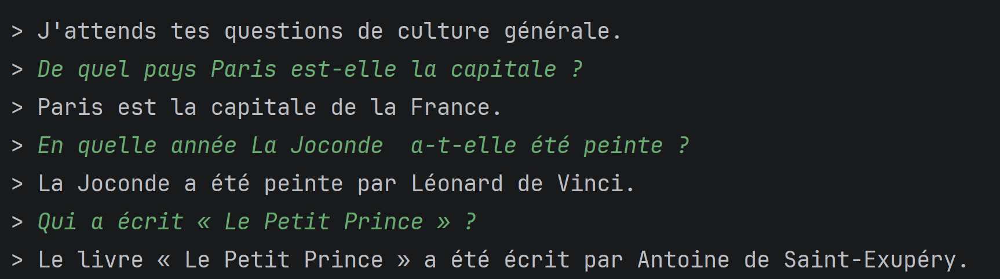
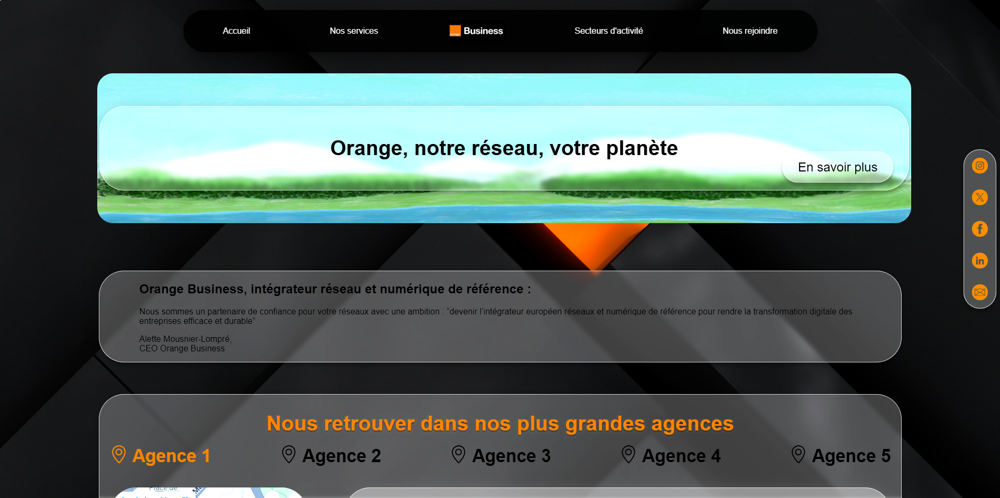
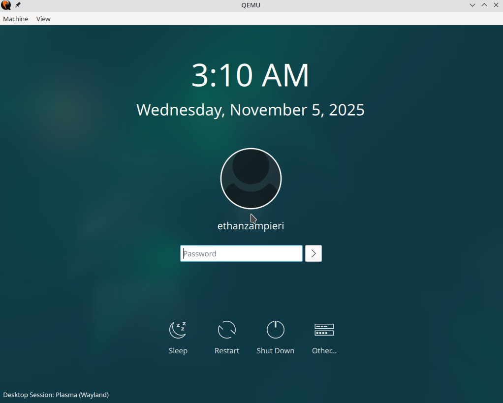
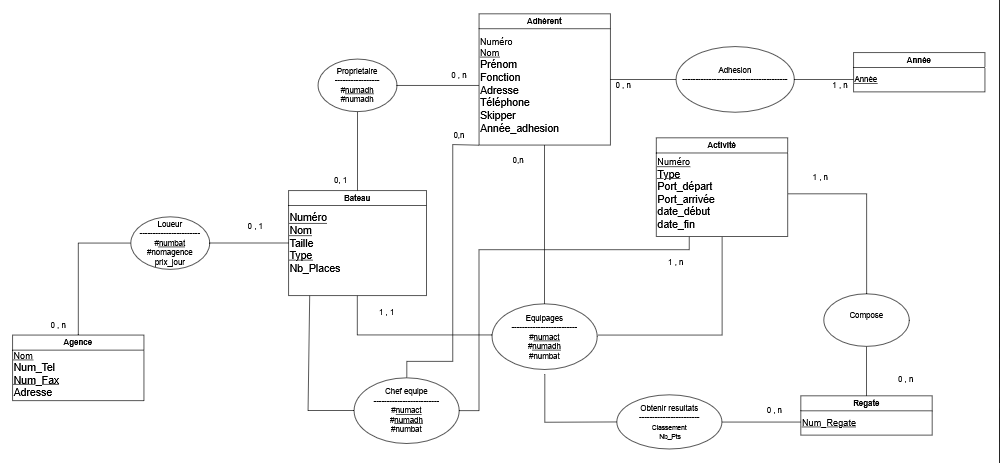

Ethan ZAMPIERI
Étudiant en BUT Informatique · Futur développeur web & logiciel
Je m'appelle Ethan ZAMPIERI, étudiant en 1ère année de BUT Informatique à l'Université Grenoble Alpes. Je me destine au développement web et logiciel, domaines dans lesquels je développe mes compétences à travers mes projets académiques.
Langages pratiqués :
- JAVA / JavaFX — logique applicative & interfaces
- SQL — gestion de bases de données
- HTML / CSS — intégration web front-end
- Shell — administration système & scripts
Projets réalisés
Chatbot
Code permettant de répondre à des questions prédéfinies de culture générale.
- Réalisation en duo
- Sur une période de 5 homme·jours
- Langage : JAVA

Site factice de Orange Business

Site fait en équipe afin de changer le style pour s'accommoder aux goûts des 3ème pour des stages.
- Réalisation en équipe de 4 personnes
- Sur une période ≈ 64 homme·heures
- Langage : HTML / CSS / JS
Installation d'une machine virtuelle
Mise en place et confection d'un guide d'installation d'une machine virtuelle.
- Réalisation en solitaire
- Sur une période de 3 homme·heures
- Langage : Shell

Gestion d'une base de données

Création et gestion de base de données d'agence de bateaux à voile.
- Réalisation en duo
- Sur une période ≈ 10 homme·heures
- Langage : SQL (dBeaver)